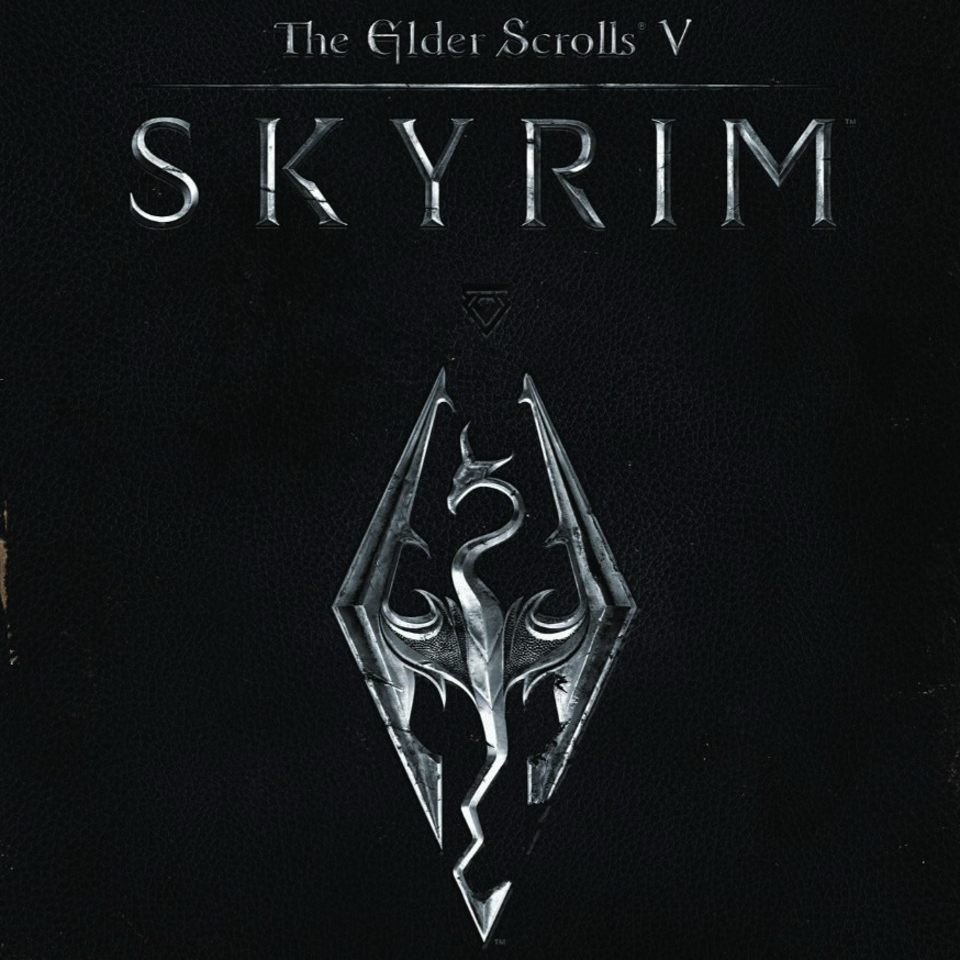

The Elder Scrolls V: Skyrim Special Edition PC Review
Leif Johnson
1 November 2016 6:00 pm
When I play a remastered version of a game I love, I expect it to be at least as good as the old one in every way. And unfortunately, with Skyrim Special Edition on PC, that expectation hasn’t been fully met. There's some good stuff under the hood here and it's great that Bethesda has made it free for anybody who owns the original and all its expansions, but it comes off as barely better than what we've already had on PC for years and temporarily turns back the clock on the available mods.
There are, in fact, some key differences. It's 64-bit now instead of the old 32-bit version, which means it technically should better handle stuffing Breezehome with thousands of sweet rolls than it could in the past. It also incorporates many of the other features made to Bethesda’s engine for Fallout 4, such as improved lighting and depth-of-field effects, plus some general beautification of the environments. This boost, unfortunately, also appears to mean it doesn't work as well on older graphics cards that could confidently handle the 2011 version. This is a bummer in of itself, but the jump to 64-bit also means many of the mountains of old mods won't work without an update from the modders themselves, thus crushing any dreams of switching immediately to this version with all the old mods blazing. Thus, any saves you have that used gameplay-altering mods won’t work with the new version. It's also a shame that there's literally no new content here, as even a couple of new shouts or a few surprise new enemy types would have served as agreeable lures for veterans.
The kind of thing wouldn't sting so badly if the Special Edition version looked significantly better. There's definitely been some fresh texture work here, but it's uneven. I love that there's lusher foliage now in the woods around Riften and Falkreath, but on the whole it doesn't look terribly different from the high-resolution texture pack, and certainly doesn’t compare favorably to the mods I had installed. Sure, I admire the richer foliage, but then I see the wooden hair of someone like Aela and wonder why this update didn't get a bit more love.
If you're not fond of the overly pink and orange sunsets that spring from the intense new color saturation, you might even find the Special Edition a bit of a step back from the original version. At its worst, it looks like Thomas Kinkade's vision of Tamriel. It's certainly not all bad, though, as I sometimes felt as though I could feel the northern sun while walking beneath the crisper blue skies surrounding Whiterun. There's more color in this world, and even though I think a drab palette is well suited to Skyrim and its story, that extra vibrancy is often enough to make me care a little more about saving it.
Special Edition is an update that thrives on the details rather than the big picture. Some of the better effects have long been possible through mods that make almost every "must-have" list, such as new shaders for water that add a degree of photorealism as the light bounces off the waters of Lake Ilinalta. Some are positively beautiful, such as the way water now flows around rocks in a brook. There's also a new dynamic depth-of-field effect — a subtle addition (usually), but one that brings a greater degree of focus to Skyrim's many conversations. And wonder of wonders, you can now easily alt-tab to the desktop, unlike in the original version.
And while I may complain about NPC hair, I'm a big fan of the new volumetric "god rays" which greatly enrich the sense of place when I’m stalking through the forests around Falkreath while shafts of ghostly moonlight shoot down on the undergrowth. In the mornings around Riften (once the pink has lifted), there's a near-religious ambience as the light plays on the mist and slices past the shadows.
It's too bad Bethesda didn't give as much attention to ensuring it runs well. I have an Nvidia GTX 980, and if anything this version runs choppier on my PC than it does on my PS4 in the open world, although the framerates shoot up in town. Strangely, even the sound has been overly compressed in the Special Edition and is noticeably worse quality, which makes no sense. (Bethesda says a fix is in the works for this issue.)
Beyond that, unlike the console version, the PC version of the Special Edition doesn't even bring the wonder of all the little under-the-hood features like quicksaves and faster load times – the PC version has had those all along. (I’ve seen some people report that their save loads take longer, although I’ve had no such trouble.) There's one update that commands respect, at least: you no longer have to sift through each save file to figure out which ones belong to which hero you've made, as the Special Edition takes a welcome cue from Fallout 4 and sorts them by character.
Mind you, most of my complaints come from the perspective of someone who's been playing Skyrim for years. If you've never had a chance to play, this is arguably the version you should jump into because even though most of the old mods won’t work right away, the important ones will likely be updated and most if not all future modding efforts will be built to work with the 64-bit Special Edition instead of the old 32-bit one that had cramped the modding community’s style for so long. On the other hand, in the short term it will be more limited in terms of what mods you can play until the community updates them to work with the 64-bit version, and therefore much less capable.
And remember, underneath all this is a game that remains one of the finest RPGs ever made. (Go back in time and read our review of the original version of Skyrim here.) True, Skyrim's combat remains relatively simplistic and AI interactions are prone to unintentional comedy when NPCs end up making you listen to a cleaning lady sigh about her problems in one ear while gruff jarls shout out history-making pronouncements in the other. Some bugs remain (and likely always will) although many of them can produce bizarre and unexpected behavior that be dismissed as part of a Bethesda game's charm. The number of bugs of the actual game-breaking variety has much diminished from what we first saw in 2011.
Yet to this day, few other RPGs so perfectly capture the experience of trotting out to the wilderness to carve out adventures with any approach you want to take. The Witcher 3: Wild Hunt may have better stories and better character models, but you're always Geralt. In Skyrim, it's myself I remember going into the forests and into crumbling keeps to forge my destiny. Skyrim's strengths lie in its freedom and open-endedness. Some people criticize the way your actions don't fully change the world, but I find I admire it, as one day it lets me be an assassin sneaking through castles and the next I can play as a hunter living off the land and selling my pelts. It lets you make of it what you want to and when you want to.
The Verdict
If you’ve never experienced The Elder Scrolls V: Skyrim, it's certainly an adventure you can’t afford to miss and still one of the all-time great RPGs. However,while the Special Edition’s world benefits from improved lighting and effects, it has no new content and still includes many of the original version’s ugly character models and weak combat animations. Plus, the modding scene will likely take some time to update the back catalog of mods to be compatible with the new 64-bit engine. That means that while the Special Edition may one day become the definitive version of this legendary RPG, if you want to play right now and want the best experience, you’re better off getting the 2011 version and modding it.